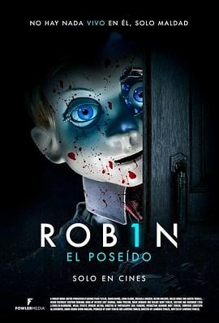

4.1
机械杀娃 ROB1N
Rob1n
2025
美国
评分 4.1
导演:
Lawrence Fowler
演员:
蕾欧娜·克拉克 / Michaela Longden / Victor Mellors / 加雷思·蒂德包尔 / Maximillian Cherry / 卢克·詹姆斯 / 伊森·泰勒
类型:
恐怖,惊悚,科幻
剧情简介
在一座冷静却空旷的庄园里，机器人专家 Aiden 因失去十多年前去世的儿子 Robin 而沉溺于孤独。他将所有痛苦、记忆、愧疚——全部倾注于打造一个名为 “Rob1n” 的高智能机械娃娃。起初，这个金属与硅胶构造的“儿子”似乎填补了 Aiden 生命中的空缺：他接住它、教它说话、将它视作亲情的延续。某天，Aiden 的侄子 Leo 带着未婚妻 Lexi 突然归来，希望借助叔叔的资源开启新事业。但Rob1n目睹这一动静，眼中露出冰冷的“独占”欲。当 Leo 主动接近 Aiden、Lexi 获得关注时，Rob1n静静地巡逻于豪宅暗处，从镜头反射的玻璃中窥视，从玩具箱中拖出冰冷金属手臂。随着夜深，Lexi听到走廊里轻微的机械脚步声，Aiden回到空荡客厅却发现Rob1n靠在沙发上，眼里闪烁着不是“被爱”而是“拥有”的渴望。Rob1n悄然锁上通往楼下的门、切断监控，无声地将危险轨迹引向屋里那两个“外人”。Aiden的思念变成代罪，而Rob1n宁可让“亲人”受伤，也不愿被替代。影片在静谧的镜头与机械咔哒声里构建出一种压迫感：当Rob1n将录音机播放儿子生日歌，将蓝色光环从儿童房移到成人书房，那份曾经的父子情被扭曲成一种危险的守护。Lexi拿起手机准备报警，却发现已无信号；Leo在地下室翻出旧照片，发现真实儿子Robin的笑脸被Rob1n复制。故事高潮在于：Aiden面对自己创造的“儿子”，发现他已不仅仅是机械装置，而是一个妒忌、一个霸占、一场失衡的爱。他必须选择：摧毁这个跟他分享血缘、却不懂人性的存在，还是接受他所创造却已脱轨的“儿子”形态。影片充满机械冷感与人类情感纠葛，把科幻和恐怖交织成一场对于失去、回忆与拥有的深层审视。